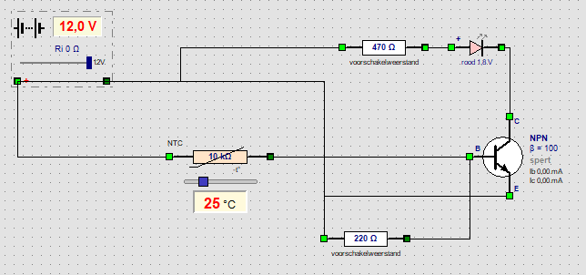

 NTC, van de
basis naar de − een weerstand van 220 Ω. In de collector 470 Ω en een rode led. Bij 25 °C
blijft de led uit.
NTC, van de
basis naar de − een weerstand van 220 Ω. In de collector 470 Ω en een rode led. Bij 25 °C
blijft de led uit.Leerpad › Elektronica › Les 41 van 41

NTC, van de
basis naar de − een weerstand van 220 Ω. In de collector 470 Ω en een rode led. Bij 25 °C
blijft de led uit.Een NTC is een weerstand die kleiner wordt naarmate hij warmer wordt. Met de schuifknop regel je de temperatuur; in het schermpje eronder staat de temperatuur, in het blokje de weerstand.
Ook hier vormen de NTC en de vaste weerstand een spanningsdeler, maar nu staat de sensor bovenaan, aan de kant van de +. De basis krijgt het stuk van de 12 V dat over de 220 Ω staat:
Ubasis = 12 V × 220 Ω / (RNTC + 220 Ω)

Het omslagpunt: de basis krijgt 0,7 V als de NTC 11,3 / 0,7 × 220 Ω ≈ 3,55 kΩ heeft. Dat is bij ongeveer 51 °C. Vergelijk met het nachtlampje: daar stond de sensor onderaan, en ging de led aan als de weerstand van de sensor groot werd. Hier staat hij bovenaan, en gaat de led aan als zijn weerstand klein wordt.
Kies met rechtsklik op de weerstand van 220 Ω Soort › voorschakelweerstand (470 Ω). Bij welke temperatuur gaat de led nu aan?
Al bij ongeveer 32 °C. Met 470 Ω krijgt de basis 0,7 V zodra de NTC kleiner is dan 11,3 / 0,7 × 470 Ω ≈ 7,6 kΩ, en dat is hij al bij een lagere temperatuur. Hoe groter de onderste weerstand, hoe lager de alarmtemperatuur.